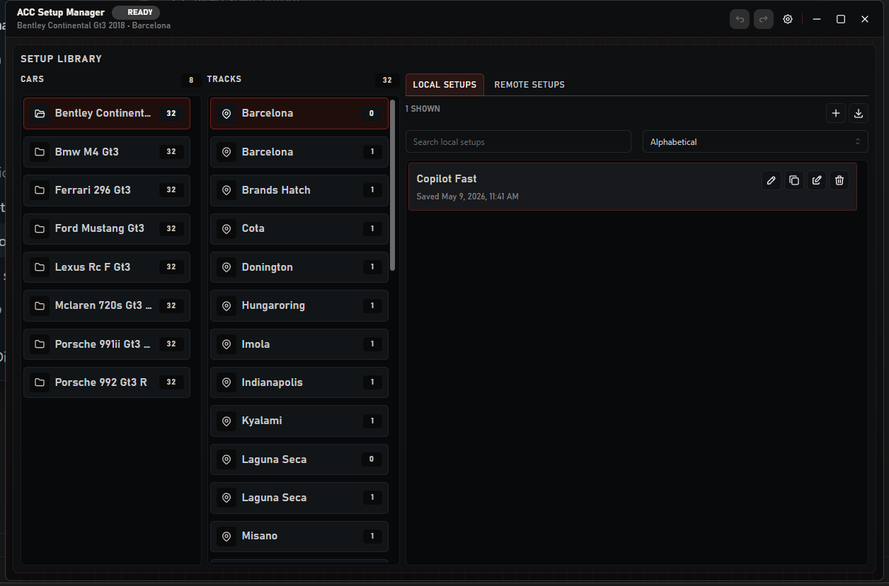
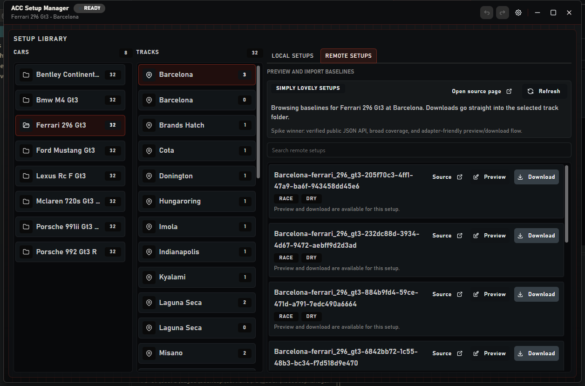

Focus
Local-first workflow
Auto-detect your ACC setups folder, keep manual overrides, and work directly with real files.
Free and open source
Easily Manage and Find new Assetto Corsa Competizione setups for your cars on any track.
Focus
Auto-detect your ACC setups folder, keep manual overrides, and work directly with real files.
Editing
Use the structured editor by default, then switch to raw JSON when you want full control.
Remote
Preview, cache, and download verified remote setups into the currently selected track folder.
Screenshots
Real desktop captures from the current build, showing the local library workflow and the editor workspace.

Browse cars, tracks, and setups in a single desktop workspace without leaving the ACC folder structure.

Browse verified remote setups for Ferrari 296 GT3 at Barcelona and pull them straight into the selected track folder.
Why it exists
ACC Setup Manager keeps setup files readable and organized while still staying close to the actual ACC folder structure.
Included now